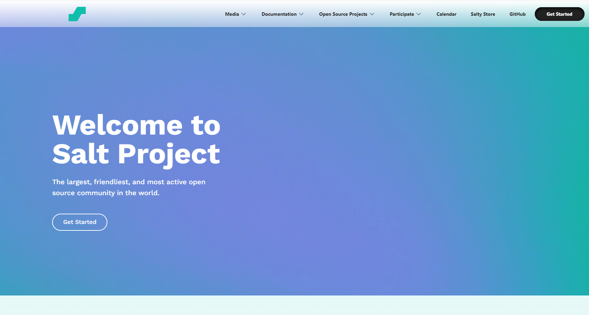
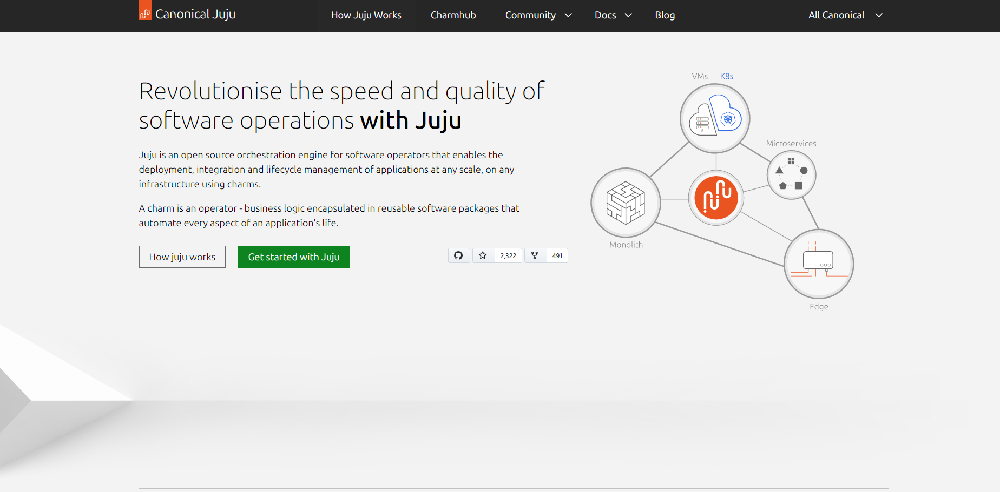

A Netlify egy távoli számítási felhővel foglalkozó vállalat, amely fejlesztői platformot kínál webalkalmazások és dinamikus webhelyek összeállítási, telepítési és
szerver nélküli háttérszolgáltatásaival.
A platform nyílt webes szabványokra épül, lehetővé téve az építőeszközök, webes keretrendszerek, API-k és különféle webes technológiák integrálását egy egységes
fejlesztői munkafolyamatba.
A vállalat lehetővé teszi olyan webhelyek létrehozását, telepítését és méretezését, amelyek forrásfájljait a Git verziókezelő rendszer tárolja, majd statikus
webtartalom-fájlokká generálják[b 1][8], amelyeket tartalomszolgáltató hálózaton keresztül szolgáltatnak ki.[b 2][b 3] ] A platform a kiszolgáló nélküli
számítástechnika[9] és az éles számítástechnika szolgáltatásait és funkcióit is kínálja, kiszolgáló nélküli funkciókat kínálva, amelyek verziófüggő, összeépített és
a frontend kóddal együtt telepíthetők.
A Netlify funkciókat interaktív funkciókkal rendelkező dinamikus webhelyek készítésére használják.
A Netlify platform a legnépszerűbb beépülő modulokkal és alkalmazásprogramozási felületekkel (API-kkal) integrálva új képességeket és használati eseteket nyit meg a
Netlify webes projektjeihez.
A GitLab Inc. egy nyílt magú vállalat, amely a GitLabot üzemelteti, egy olyan DevOps szoftvercsomagot, amely szoftvereket fejleszthet, biztosíthat és működtethet.
A nyílt forráskódú szoftverprojektet Dmytro Zaporozhets ukrán fejlesztő és Sytse Sijbrandij holland fejlesztő készítette.
2018-ban a GitLab Inc.-t tartották az első részben ukrán egyszarvúnak.
A GitLab becslések szerint több mint 30 millió regisztrált felhasználóval rendelkezik, köztük 1 millió aktív licenccel rendelkező felhasználó.
Több mint 3300 kódközreműködő és csapattag működik több mint 60 országban.
A Vercel Inc. , korábban ZEIT , egy amerikai felhőplatform szolgáltató cégként . A cég fenntartja a Next.js webfejlesztési keretrendszert.
A Vercel architektúrája az összeállítható architektúrára épül , és a telepítések kezelése Git -tárolókon, a Vercel CLI-n vagy a Vercel REST API-n keresztül történik
.
A Vercel a MACH Szövetség tagja .
A Docker egy számítógépes program, amely operációs rendszer szintű virtualizációt végez.
A Docker konténerek futtatására szolgál. A konténerek egymástól elkülönülnek, és saját alkalmazást, eszközöket, könyvtárakat és konfigurációs fájlokat kötnek össze,
jól meghatározott csatornákon keresztül kommunikálva egymással.
Minden konténert egyetlen operációsrendszer-kernel működtet, így kevesebb a rendszerigényük, mint a virtuális gépeknek. A konténerek olyan imagefile-okból jönnek
létre, amelyek pontos specifikációkat tartalmaznak.
Az imagefile-ok gyakran standard image-ek kombinálásával és módosításával jönnek létre, amelyek szabadon elérhető repozitóriumokból letölthetőek.
A Jenkins egy nyílt forráskódú, Java nyelven írott folyamatos integrációs eszköz.
A projekt a Hudson projekt egy leágaztatásává vált, az Oracle-lal való vita után. A Jenkins folyamatos integrációs szolgáltatást nyújt szoftverfejlesztéshez.
Ez egy szerver alapú rendszer, mely egy olyan szervlet konténerben futhat, mint pl. az Apache Tomcat.
Támogatja a következő SCM eszközöket: AccuRev, Cvs, Subversion, Git, Mercurial, Perforce, Clearcase és RTC, és végre tud hajtani Apache Ant és Apache Maven alapú
projekteket valamint tetszőleges shell scripteket és Windows batch parancsokat is.
A Jenkins elsődleges fejlesztője Kohsuke Kawaguchi. A Jenkinst MIT licenc alatt adják ki és szabad szoftver.
A buildelés kezdeményezhető számos eszközzel, többek közt egy verziókezelő rendszer jóváhagyása (angolul commit) alapján, vagy cron-szerű mechanizmussal
ütemezetten, buildelés abban az esetben, ha más buildek befejeződtek, és speciális build URL kérése alapján is.
Az Ansible olyan szoftvereszközök készlete, amely kódként teszi lehetővé az infrastruktúrát. Nyílt forráskódú, csomag szoftver-kiépítést, konfigurációkezelést és
alkalmazástelepítési funkciókat tartalmaz.
Eredetileg Michael DeHaan készítette. 2015-ben vásárolta meg a Red Hat. Az Ansible-t mind a Unix-szerű rendszerek, mind a Microsoft Windows konfigurálására
tervezték.
Az Ansible ügynök nélküli, ideiglenes távoli kapcsolatokra támaszkodik SSH -n vagy Windows távfelügyeleten keresztül, amely lehetővé teszi a PowerShell
végrehajtását.
Az Ansible vezérlőcsomópont a legtöbb Unix-szerű rendszeren fut, amely képes a Python futtatására, beleértve a telepített WSL -t tartalmazó Windows rendszereket is.
A rendszer konfigurációját részben a saját deklaratív nyelve határozza meg.
A Salt (más néven SaltStack ) egy Python-alapú, nyílt forráskódú szoftver eseményvezérelt IT-automatizáláshoz, távoli feladatvégrehajtáshoz és konfigurációkezeléshez . Az „ infrastruktúra mint kód ” megközelítés támogatása az adatközponti rendszer és a hálózat üzembe helyezésében és kezelésében, a konfiguráció automatizálásában, a SecOps hangszerelésben, a sebezhetőségek elhárításában és a hibrid felhővezérlésben.
A Juju egy ingyenes és nyílt forráskódú alkalmazásmodellező eszköz, amelyet a Canonical Ltd fejlesztett ki . A Juju egy alkalmazáskezelő rendszer. Úgy készült, hogy csökkentse a szoftverek többletköltségét azáltal, hogy megkönnyíti, telepíti, konfigurálja, skálázza, integrálja és operatív feladatokat hajt végre nyilvános és privát felhőszolgáltatásokon, valamint csupasz fém szervereken és helyi konténer-alapú telepítéseken.

A Selenium webalkalmazások automatikus tesztelésére szolgáló keretrendszer, melyet a ThoughtWorks cég ír, és szabad szoftverként az Apache 2.0 licenc alatt ad ki.
Ez széles körben használható eszköz és az egyik legismertebb nyílt forrású teszteszköz.
Seleniummal lehetséges egy webalkalmazásra való hatások felvétele és ezek tetszőlegesen gyakran történő automatikus ellenőrzése.
Ez különösen a webalkalmazás-fejlesztők számára csökkentheti a szükséges munkaidőt, például internetes ívek kitöltésekor, így a tesztelést gyorsítja, rugalmasabbá
és megbízhatóbbá teszi.
A Selenium csak HTML-en és JavaScripten alapul. Gyors belépéshez telepíthető a Selenium-IDE például Firefox-bővítményként: a felhasználó a Firefoxszal kommunikál, a
Selenium felveszi és újra lejátssza a tesztet.
A Consul a HashiCorp által kifejlesztett szolgáltatási hálózati platform .
A Consul kezdetben 2014-ben jelent meg szolgáltatásfelderítési platformként. A szolgáltatásfelderítésen kívül most egy teljes értékű szolgáltatáshálót biztosít a
biztonságos szolgáltatásszegmentáláshoz bármely felhőben vagy futási környezetben , valamint elosztott kulcsérték-tárolást az alkalmazások konfigurálásához.
A regisztrált szolgáltatások és csomópontok DNS- vagy HTTP-interfészen keresztül kérdezhetők le.
Az Envoy proxy biztonságot, megfigyelhetőséget és rugalmasságot biztosít az összes alkalmazásforgalom számára. A HashiCorp 2023. augusztus 10-én bejelentette, hogy
szoftverének licencét MIT licencről Business Source License 1.1-re változtatta.